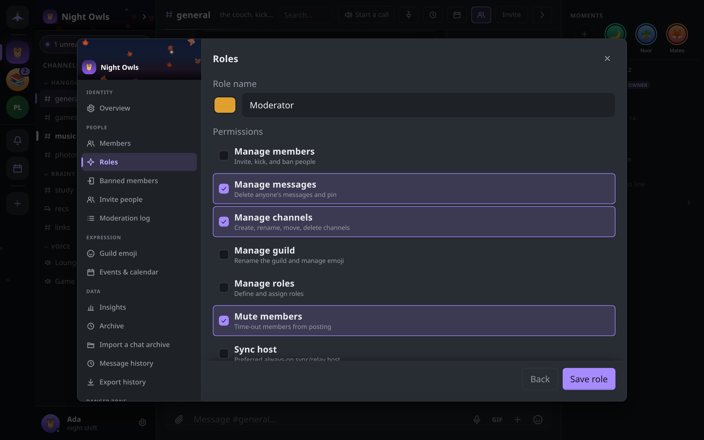

Roles and permissions
How a guild decides who may do what: the owner, named roles, the seven permissions a role can grant, and the rank rules that stop anyone granting themselves more power than they have.
How authority works
- The owner holds every permission and outranks every role. A guild has exactly one owner at a time; ownership moves only by transfer or by an heir claiming it (see Leaving a guild).
- Everyone else gets their powers from roles. A role is a name, a color and a set of permissions. A member can hold several roles, and their permissions add up.
- A member with no role can read and post, react, start threads and forum posts, create events and use the guild's emoji and GIFs. Everything in the table below needs a role that grants it.
Every role change, ban, kick and mute is a signed record that every member's device checks for itself. An action signed by someone who was not allowed to take it is ignored by every honest client. The Moderation log in guild settings lists these records; see Moderation and safety.
The permissions
| Permission | Hint in the editor | What it lets a member do |
|---|---|---|
| Manage members | Invite, kick, and ban people | Get the guild's invite code and add verified contacts; admit new members; kick, ban and lift bans; set other members' nicknames (only for members of lower rank, never the owner) |
| Manage messages | Delete anyone's messages and pin | Delete anyone's message and use /clear; Show original on a deleted message; pin and unpin messages; post in announcement channels; skip slow mode; edit or delete anyone's event; pin, close and reopen forum posts, and edit any post's tags or answered state |
| Manage channels | Create, rename, move, delete channels | Create, rename, retype, move and delete channels and categories; edit channel topics, slow mode and an announcement channel's linked channels; set a forum's tags and banner; post in announcement channels; skip slow mode |
| Manage guild | Rename the guild and manage emoji | Edit the guild's name, icon, banner and description; add and remove custom emoji; curate the guild's GIF pack; set the guild-wide and per-channel message history limits |
| Manage roles | Define and assign roles | Create, edit and delete roles and assign them to members, within the rank rules below |
| Mute members | Time-out members from posting | Mute and unmute members |
| Sync host | Preferred always-on sync/relay host | Marks a member's device as a preferred source when others catch up on history or are re-added after missing changes; meant for an always-on machine |
Only the owner can import a chat archive, transfer ownership, or name an heir.
Creating and editing roles
Open Guild settings → Roles, or right-click the guild in the rail and choose Roles & permissions. These are shown only to the owner and to members with Manage roles.
- Click New role.
- Enter a Role name (up to 32 characters) and pick its color.
- Tick the Permissions it grants.
- Click Save role.
Click a role in the list to edit it. The bin icon deletes it after a confirmation; the role is removed from everyone who held it, along with its permissions, and this cannot be undone.
A role's position in the hierarchy is its rank. The editor has no control for reordering: a new role is always placed above every existing one. Because nobody but the owner may create a role at or above their own rank, in practice only the owner can create roles here. A member with Manage roles can edit, delete and assign the roles that rank below them.

Assigning roles
- Guild settings → Members lists everyone, sortable by Name, Roles, Standing and Fingerprint. The owner and members with Manage roles can add and remove roles there, for one member or a selection.
- A member's profile card and right-click menu offer Make admin (or Remove admin) to the owner and to anyone who holds every permission. It assigns a role named Admin that grants all seven permissions, creating it first if the guild has none.
Roles also work as mention groups: @rolename in a message notifies everyone who holds the role.
Rank rules
A member's rank is the highest position among their roles. A member with no roles ranks below everyone; the owner ranks above everyone. For anyone but the owner:
- You can only create or edit a role below your own rank, and only with permissions you already hold.
- You can only delete or assign roles below your own rank.
- Nobody but the owner can give the owner a role.
- Nobody can ban, kick or mute the owner.
- A ban removes all of the member's roles.
Together these mean a member with Manage roles cannot raise themselves: any role they make is capped at their own permissions and must rank below them.
What "enforced" means here
There is no server to refuse an action, so each rule is checked on every member's device. Removing a member from the encrypted group is a real cryptographic step: once kicked or banned they cannot read new messages. Mutes, slow mode, announcement-only posting and closed forum posts work differently: each member's app drops the messages that break them. A modified client can still send such a message, but no honest member's app will show it.